TEMA 04
Identificación de etiquetas y atributos
Material de estudio organizado a partir del PDF correspondiente. Se conserva el contenido textual del documento y se distribuye por páginas para facilitar su consulta.
Página 1
Identificación de etiquetas y atributos
Página 2
1. Introducción y contextualización práctica
2. Etiquetas de texto
5
2.1. Salto de línea
5
2.2. Otros significados
5
2.3. Énfasis
6
2.4. Importante
6
2.5. Subíndice y superíndice
6
2.6. Atención
6
2.7. Tachado
6
2.8. Tecnicismo
7
2.9. Comentario
7
2.10. Resaltado
7
3. Enlaces
8
3.1. La etiqueta <a>
8
4. Listas
10
4.1. Listas encadenadas
12
5. Contenido incrustado
12
5.1. Imágenes
13
5.2. Documentos HTML incrustados
14 cualquier medio o procedimiento, incluidos la reprografía y el tratamiento informático.
Página 3
6. Caso práctico 1: “Plantilla de trabajadores”
15
7. Caso práctico 2: “Última versión plantilla trabajadores”
15
8. Resumen y resolución del caso práctico de la unidad
16
9. Webgrafía
17
Página 4
1. Introducción y contextualización práctica
Continuamos con las etiquetas que podemos incluir en el cuerpo del documento HTML. En este tema, vamos a trabajar en los formatos del texto, la inclusión de listas y cómo crear enlaces. El concepto de enlace es muy importante. Recordemos que HTML significa Hypertext Markup Language (lenguaje de marcas de hipertexto), lo que nos va a permitir crear relaciones (enlaces) entre documentos que existen en la web y así dotar de mayor contenido a nuestras páginas. La agencia de viajes Sol y Mar sigue confiando en WebMalagaDesign y les encarga otro trabajo. Han pensado en crear un blog con información interesante sobre los países con los que trabaja la agencia. Escucha el siguiente audio donde planteamos la contextualización práctica de este tema. Encontrarás su resolución en el apartado «Resumen y Resolución del caso práctico de la unidad». Conocer las principales etiquetas utilizadas en el cuerpo de un documento HTML. Trabajar con enlaces. Crear listas. https://bit.ly/312oi3N
Página 5
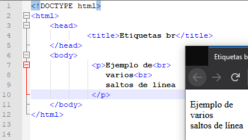
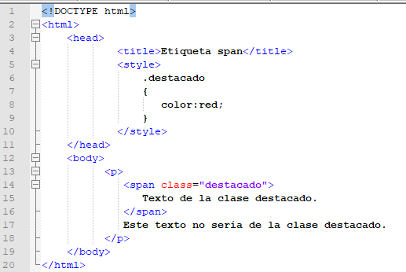
2. Etiquetas de texto
Las etiquetas de texto nos van a permitir marcar, referenciar, estilizar o destacar partes de nuestro contenido que tenga un significado que queramos resaltar. En líneas generales, los elementos de texto se encuentran dentro de
elementos de bloque o, incluso, de tablas que veremos más adelante. Las principales etiquetas de texto son:
2.1. Salto de línea
• Etiqueta: <br>
• Función: permite insertar saltos de línea.
2.2. Otros significados
• Etiqueta: <span>
• Función: no tiene un significado definido y se usa cuando no existe ninguna etiqueta adecuada. Se le suele
asociar una clase en CSS para modificar su aspecto. Lo veremos en el apartado de CSS.
Página 6
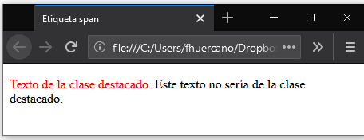
2.3. Énfasis
• Etiqueta: <em>
• Función: nos permite enfatizar partes del texto. El estilo por defecto de los navegadores suele mostrar este
texto en cursiva.
2.4. Importante
• Etiqueta: <strong>
• Función: esta etiqueta indica que el texto es importante y que lo quiero destacar con respecto al resto del
párrafo. Tiene significado semántico. Normalmente el navegador lo muestra en negrita.
2.5. Subíndice y superíndice
• Etiqueta subíndice: <sub>
• Etiqueta superíndice: <sup>
• Función: estas etiquetas nos permiten identificar texto en subíndice y en superíndice, respectivamente.
2.6. Atención
• Etiqueta: <b>
• Función: para identificar cierto texto con el que queramos destacar algo. Se suele mostrar en negrita. A
diferencia de la etiqueta strong, esta etiqueta no tiene significado semántico. Aunque se destaque, no implica que sea importante. En el caso de la etiqueta strong sí identificamos que el contenido es de importancia.
2.7. Tachado
• Etiqueta: <s>
• Función: identifica contenido incorrecto y que se quiere mostrar tachado.
Página 7
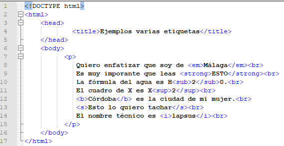
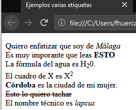
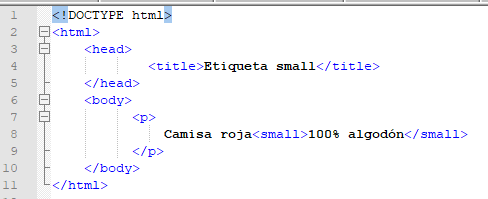
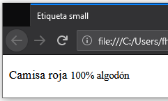
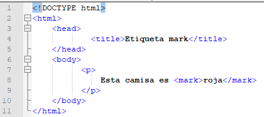
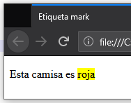
2.8. Tecnicismo
• Etiqueta: <i>
• Función: se utiliza para resaltar texto que tiene un significado especial. El navegador lo suele mostrar en
cursiva.
2.9. Comentario
• Etiqueta: <small>
• Función: se utiliza para indicar información que es secundaria y, por lo tanto, se suele mostrar en letra más
pequeña en comparación al resto del párrafo.
2.10. Resaltado
• Etiqueta: <mark>
• Función: nos va a permitir resaltar un texto que originalmente no lo estaba. El efecto es igual que si usáramos
un rotulador fluorescente para marcar una parte del contenido. Se suele marcar en amarillo. etiquetas. Fig 7. Ejemplo etiqueta small. Fig 8. Visualización en el navegador. Fig 9. Ejemplo de etiqueta mark. Fig 10. Visualización en el navegador.
Página 8
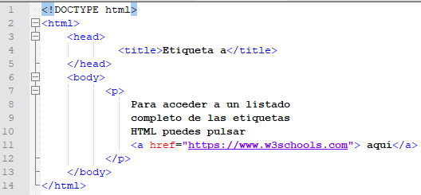
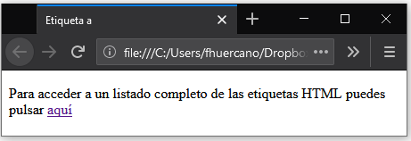
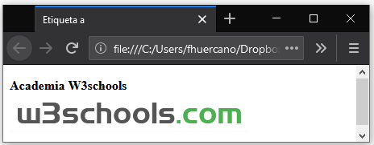
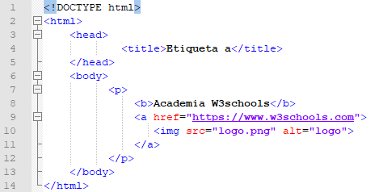
Las etiquetas de texto comentadas en este tema son aquellas que se utilizan de forma frecuente, pero existen otras menos usadas como: <cite>,<q>,<dfn>,<abbr>,<time>,<kbd>, y algunas más que puedes consultar en el siguiente enlace.
3. Enlaces
Gracias a los enlaces podemos relacionar contenidos, ya que nos van a permitir acceder a otros contenidos de nuestra página web, tanto de otras páginas de nuestro sitio web como de páginas que existan en Internet. Un enlace
consta de dos partes:
• Enlace: es el elemento HTML sobre el cual hacemos clic y nos conduce al contenido.
• Contenido: es el contenido en sí. Puede ser un archivo, otra página, una imagen, etc.
Los enlaces se crean en HTML con la etiqueta <a>
3.1. La etiqueta <a>
La etiqueta <a> dispone del atributo href, que va a indicar el destino de ese enlace en formato URI.
El enlace también podría estar asociado a una imagen. Por ejemplo:
Fig 12. Visualización en el navegador. Fig 13. Ejemplo etiqueta a con imagen.
Página 9
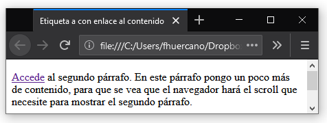
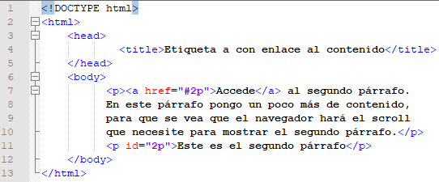
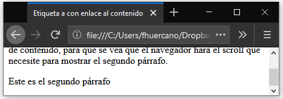
3.1.1. Destinos del enlace
El destino del enlace puede ser de varios tipos. Cuando direcciona a un archivo, el navegador nos preguntará si lo debe descargar o si lo debe mostrar. En caso de que se trate de un directorio, dependerá de la configuración del servidor, y nos mostrará su contenido o nos pedirá credenciales de acceso. Sin embargo, el destino más frecuente son referencias tanto de la propia página web como de otras páginas web de Internet. Cuando queremos acceder a un determinado contenido en la página web, debemos identificar primero ese elemento HTML con el atributo id para, posteriormente, indicar esa referencia en el href del enlace. La referencia en href hay que indicarla con el carácter almohadilla (#) junto con el id del elemento al que quiero acceder. Cuando se pulse en ese enlace, la página hará el scroll necesario hasta visualizar el elemento referenciado. Al pulsar en el enlace, se hace el suficiente scroll para que se muestre el segundo párrafo. Si queremos acceder a un elemento que se encuentre en otra página web, tendríamos que incluir la dirección URL de
esa página web y luego la referencia con #. Por ejemplo:
3.1.2. Atributo target
Con este atributo vamos a indicar cómo debe abrirse un determinado enlace. Podremos indicarle que se abra en la propia pestaña del navegador o en otra, entre otras opciones. <a href=”www.empresa.com/indice.html#importante> Contenido importante </a>
Página 10
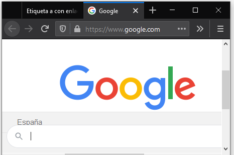
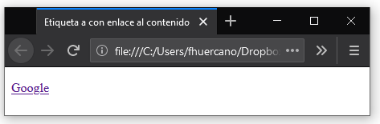
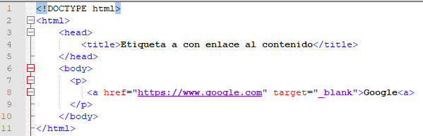
Los posibles valores de este atributo son:
• _blank: el contenido se abre en una pestaña nueva del navegador.
• _self: el contenido se abre en la misma pestaña. Por lo tanto, se quita el contenido actual para mostrar el
nuevo. Puede que esto no nos interese cuando queramos que la web inicial permanezca en la ventana del navegador.
• _parent: el contenido se abre en un elemento superior al actual.
• _top: el contenido se abre en el elemento cuyo nivel sea el más alto. En este caso, la ventana del navegador.
En el siguiente ejemplo, al pulsar en el enlace se abre Google en otra pestaña del navegador:
4. Listas
HTML disponen de tres tipos de listas:
• Ordenadas (<ol>)
• No ordenadas (<ul>)
• De definición (<dl>)
para mostrar el enlace del navegador de Google. Vídeo 1. “Tipos de enlaces” https://bit.ly/2KPeoKg
Página 11
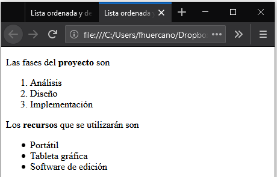
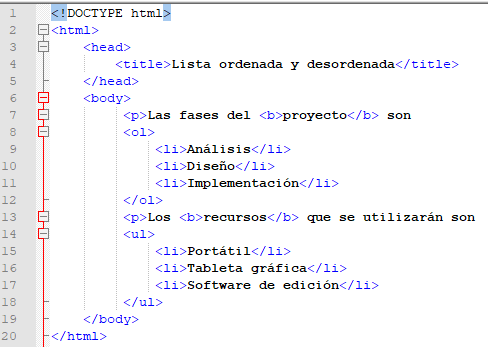
Las listas ordenadas y no ordenadas se comportan de la misma manera en HTML. Los elementos HTML que nos interesan se muestran dentro de las etiquetas que delimitan la lista en cuestión. Los elementos incluidos están delimitados por la etiqueta <li>. La única diferencia entre la lista ordenada y la desordenada es que, en la primera, los elementos se van enumerando, mientras que en la segunda se muestran con símbolos gráficos. En cuanto a las listas de definición, en el siguiente enlace tienes una descripción, y en este vídeo mostramos un ejemplo de creación. Observa también las figuras 20 y 21, donde encontrarás un ejemplo de uso de listas. Vídeo 2. “Listas de definición” https://bit.ly/2YBV34E
Página 12
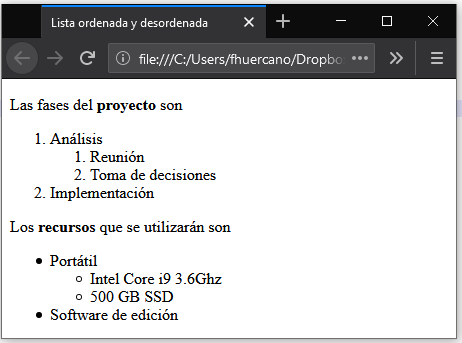
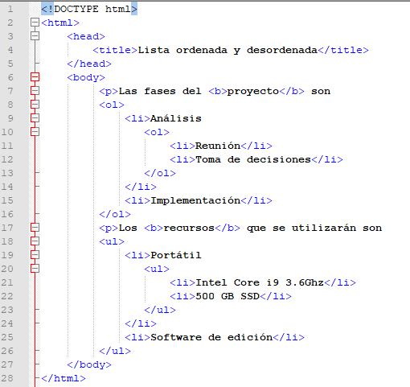
4.1. Listas encadenadas
Las listas se pueden anidar, lo que nos permitirá crear una cierta jerarquía. Cuando se incluye una lista dentro de otra, el navegador va añadiendo tabuladores que nos facilitarán la visualización de esa jerarquía. En el caso de las listas ordenadas, no se crea una numeración del tipo «subapartado», sino que siempre se va a numerar empezando en el (1) o en la (a), según el tipo de enumeración que se utilice. Por el contrario, en las listas desordenadas, cada vez que se haga una sublista, se incluirá otro tipo de símbolo para diferenciarla. El símbolo que debamos incluir dependerá del navegador utilizado, pero se puede modificar con CSS.
5. Contenido incrustado
Las etiquetas de este bloque nos van a permitir incluir contenido que no forma parte del documento HTML, sino que incluye una referencia a un fichero donde está ese contenido.
Página 13
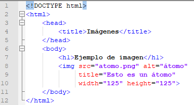
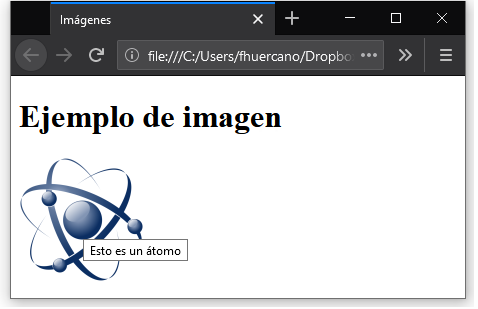
5.1. Imágenes
• Etiqueta: <img>
• Función: nos permite incluir imágenes en la página web. Dicha imagen puede ser vectorial o de mapa de bits.
Esta etiqueta contiene los siguientes atributos, entre otros:
• src: se indica dónde se encuentra el fichero externo. Puede tratarse de un fichero local o de una dirección
web.
• alt: introduce texto alternativo cuando no se pueda mostrar la imagen en el navegador.
• title: título que le damos a la imagen para poder tener mejor accesibilidad. Se muestra cuando el ratón pasa
por encima de la imagen.
• width y height: permite indicar el ancho y el alto de la imagen en píxeles. Si no indicamos ningún valor, la
imagen se visualizará en su tamaño original. Cabe indicar también que las imágenes son elementos en línea.
En este ejemplo, se muestra el uso de la etiqueta <img> junto con los atributos comentados:
Figura 26. Visualización en el navegador. Audio 1. “Imágenes vectoriales y de mapa de bits” https://bit.ly/3hBNWSM
Página 14
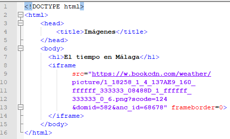
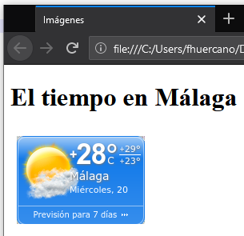
5.2. Documentos HTML incrustados
• Etiqueta: <iframe>
• Función: nos va a permitir incluir un documento HTML dentro de otro documento HTML.
Esta etiqueta tiene numerosos atributos, entre los que cabe destacar src, width y height, que tienen el mismo significado que las indicadas en la etiqueta <img>, pero que también tienen otros como frameborder=0, donde se indica que no queremos que el iframe tenga borde. El listado completo de atributos de esta etiqueta la puedes consultar aquí. En el siguiente ejemplo (figura 26 y 27) incluimos el estado del tiempo en Málaga, gracias a la dirección web que se inserta en el iframe. Son numerosas las aplicaciones que podemos incluir en el iframe, por ejemplo, un mapa de Google, un servicio web que me ofrezca Internet, etc. Vídeo 3. “Uso de iframe” https://bit.ly/3enppil Figura 27. Ejemplo etiqueta iframe. Figura 28. Visualización en el navegador.
Página 15
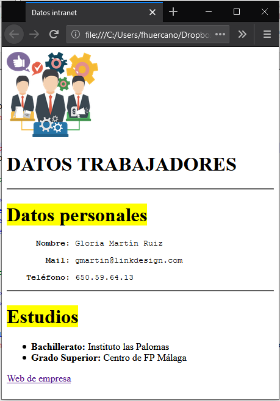
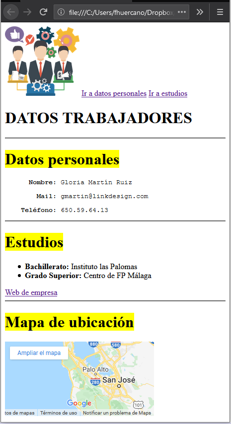
6. Caso práctico 1: “Plantilla de trabajadores”
Planteamiento: Gloria ha terminado la plantilla de trabajadores que le encargó Alberto y se la ha mostrado, pero quiere mejorarla. Nudo: le pide a Alberto que le deje un poco más de tiempo para revisar las etiquetas que estudió en el ciclo y que pueden mejorar el diseño.
Concretamente, le comenta que quiere incluir:
• Más formato en el texto, como negritas, itálicas, marcado, etc.
• Listas.
• Un enlace a la página de la empresa que se abra en una nueva pestaña.
• Una imagen.
Desenlace: en el anexo del tema podéis encontrar un ejemplo del código HTML que podríamos usar en este caso. Solución completa: Lenguaje de marcas-tema4-Anexos
7. Caso práctico 2: “Última versión plantilla
trabajadores” Planteamiento: Alberto ve la plantilla creada por Gloria y le gusta mucho, pero le indica que quedaría perfecta con algunos detalles más.
Nudo: le plantea a Gloria que incluya los siguientes elementos:
• Un enlace en la propia imagen, que abra la web de la empresa en la
misma pestaña.
• Un pequeño menú al principio, que dirija hacia el apartado de «Datos
personales» o a los «estudios».
• Un iframe donde se muestre la ubicación de la empresa.
Desenlace: en el anexo del tema encontrarás un ejemplo del código HTML que podríamos usar para ello. Solución completa: Lenguaje de marcas-tema4-Anexos Figura 30. Visualización en el navegador.
Página 16
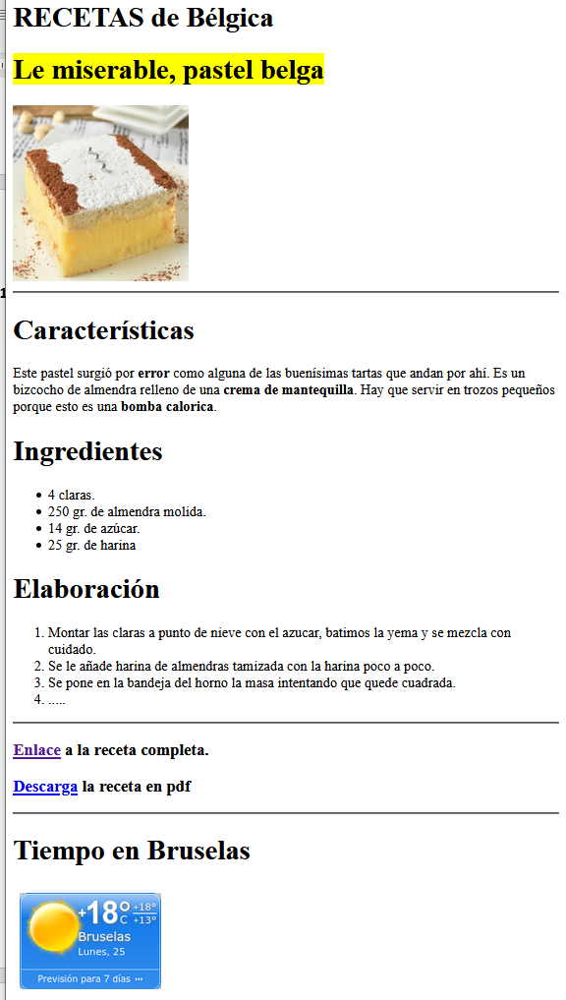
8. Resumen y resolución del caso práctico de la unidad
En este tema, hemos estudiado más etiquetas para enriquecer nuestro contenido. Etiquetas que nos permiten formatear el texto, enlaces para poder acceder a más información en la propia página o en webs externas, listas para enumerar elementos, y también imágenes que podremos redimensionar y colocar en la web con el tamaño adecuado. Cuando un contenido está diseñado en otra página y lo queremos incluir en nuestra web, podemos utilizar iframe y, de esta manera, formará parte de nuestro contenido como si estuviera incrustado. Resolución del Caso práctico de la unidad A continuación, te mostramos cómo podríamos plantear la creación del blog sobre postres de los países que hemos
planteado en la introducción del tema, así como el código que utilizaríamos:
Solución completa: Lenguaje de marcas-tema4-Anexos Formato del texto Listas Enlaces Etiquetas y atributos Contenido incrustado
Página 17
9. Webgrafía
Escuela de HTML: W3schools. Tecnología web para desarrolladores: Mdn. World Wide Web Consortium (W3C). W3C. Referencia y novedades HTML. Html Living Standard Crear logos online: Freelogodesign Photoshop online: Photoshop